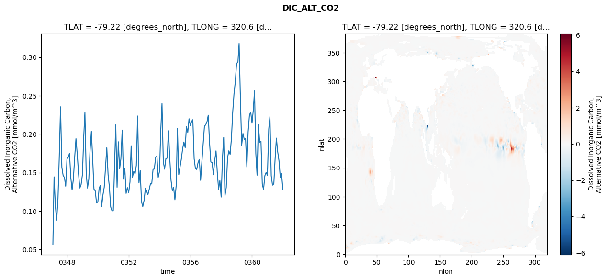
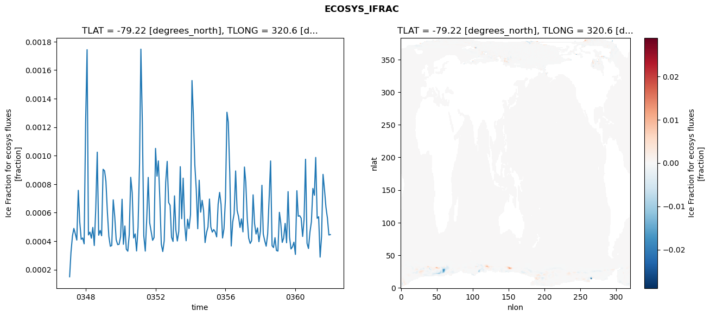
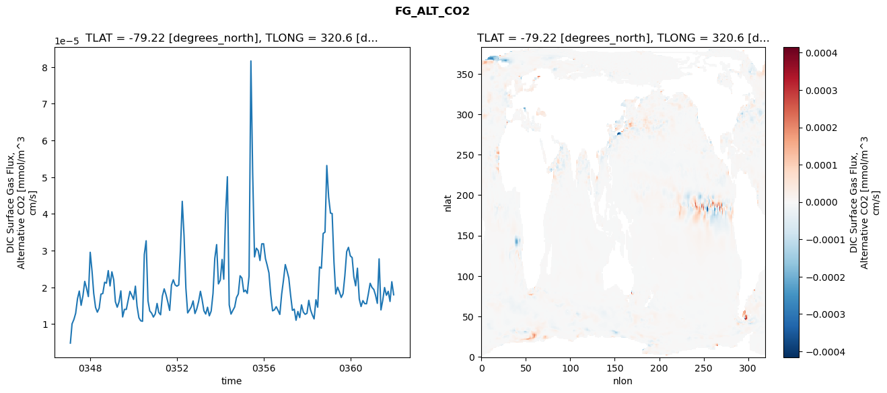
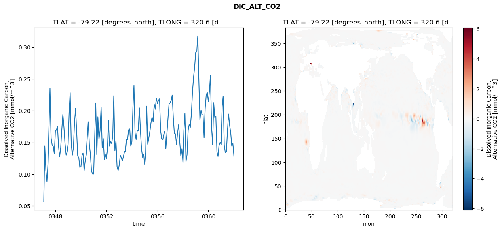
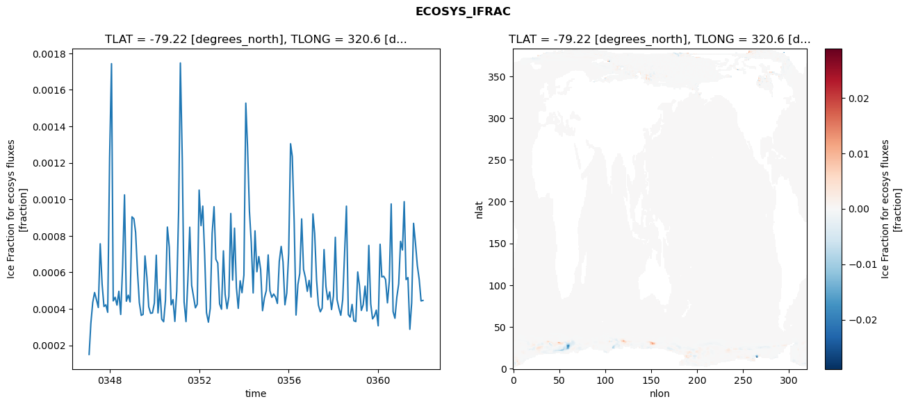
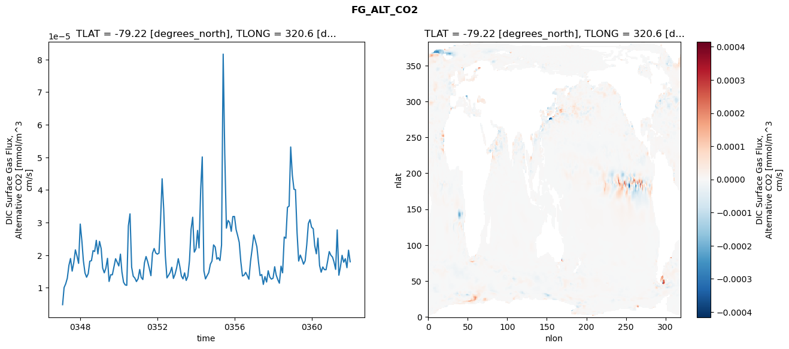

glb-dor_North_Atlantic_basin_029_1999-01-01_00116#
Simulation details#
Case: smyle.cdr-atlas-v0.glb-dor_North_Atlantic_basin_029_1999-01-01_00116.001
Basin: North_Atlantic_basin
Polygon: 29.0
Start date: 1999-01
Show code cell source Hide code cell source
import xarray as xr
import matplotlib.pyplot as plt
Show code cell source Hide code cell source
zarr_store = "/path/to/zarr/store"
# Parameters
zarr_store = "/global/cfs/projectdirs/m4746/Projects/Ocean-CDR-Atlas-v0/data/validation/smyle.cdr-atlas-v0.glb-dor_North_Atlantic_basin_029_1999-01-01_00116.001.validation.zarr"
Show code cell source Hide code cell source
%%time
ds_o = xr.open_zarr(zarr_store).compute()
ds_o
CPU times: user 619 ms, sys: 469 ms, total: 1.09 s
Wall time: 1.36 s
<xarray.Dataset> Size: 2MB
Dimensions: (nlat: 384, nlon: 320, time: 180)
Coordinates:
TLAT float64 8B -79.22
TLONG float64 8B 320.6
ULAT float64 8B -78.95
ULONG float64 8B 321.1
* time (time) object 1kB 0347-02-01 00:00:00 ... 0362-01-01 0...
z_t float32 4B 500.0
Dimensions without coordinates: nlat, nlon
Data variables:
ALK_ALT_CO2_diff (nlat, nlon) float32 492kB nan nan nan ... nan nan nan
ALK_ALT_CO2_rmse (time) float64 1kB 0.05493 0.1474 ... 0.08728 0.07539
DIC_ALT_CO2_diff (nlat, nlon) float32 492kB nan nan nan ... nan nan nan
DIC_ALT_CO2_rmse (time) float64 1kB 0.05654 0.1444 ... 0.1486 0.1282
ECOSYS_IFRAC_diff (nlat, nlon) float32 492kB nan nan nan ... nan nan nan
ECOSYS_IFRAC_rmse (time) float64 1kB 0.0001502 0.0003197 ... 0.0004461
FG_ALT_CO2_diff (nlat, nlon) float32 492kB nan nan nan ... nan nan nan
FG_ALT_CO2_rmse (time) float64 1kB 4.832e-06 1.006e-05 ... 1.799e-05xarray.Dataset
- nlat: 384
- nlon: 320
- time: 180
- TLAT()float64-79.22
- long_name :
- array of t-grid latitudes
- units :
- degrees_north
array(-79.22052261)
- TLONG()float64320.6
- long_name :
- array of t-grid longitudes
- units :
- degrees_east
array(320.56250892)
- ULAT()float64-78.95
- long_name :
- array of u-grid latitudes
- units :
- degrees_north
array(-78.95289509)
- ULONG()float64321.1
- long_name :
- array of u-grid longitudes
- units :
- degrees_east
array(321.12500894)
- time(time)object0347-02-01 00:00:00 ... 0362-01-...
- bounds :
- time_bound
- long_name :
- time
array([cftime.DatetimeNoLeap(347, 2, 1, 0, 0, 0, 0, has_year_zero=True), cftime.DatetimeNoLeap(347, 3, 1, 0, 0, 0, 0, has_year_zero=True), cftime.DatetimeNoLeap(347, 4, 1, 0, 0, 0, 0, has_year_zero=True), cftime.DatetimeNoLeap(347, 5, 1, 0, 0, 0, 0, has_year_zero=True), cftime.DatetimeNoLeap(347, 6, 1, 0, 0, 0, 0, has_year_zero=True), cftime.DatetimeNoLeap(347, 7, 1, 0, 0, 0, 0, has_year_zero=True), cftime.DatetimeNoLeap(347, 8, 1, 0, 0, 0, 0, has_year_zero=True), cftime.DatetimeNoLeap(347, 9, 1, 0, 0, 0, 0, has_year_zero=True), cftime.DatetimeNoLeap(347, 10, 1, 0, 0, 0, 0, has_year_zero=True), cftime.DatetimeNoLeap(347, 11, 1, 0, 0, 0, 0, has_year_zero=True), cftime.DatetimeNoLeap(347, 12, 1, 0, 0, 0, 0, has_year_zero=True), cftime.DatetimeNoLeap(348, 1, 1, 0, 0, 0, 0, has_year_zero=True), cftime.DatetimeNoLeap(348, 2, 1, 0, 0, 0, 0, has_year_zero=True), cftime.DatetimeNoLeap(348, 3, 1, 0, 0, 0, 0, has_year_zero=True), cftime.DatetimeNoLeap(348, 4, 1, 0, 0, 0, 0, has_year_zero=True), cftime.DatetimeNoLeap(348, 5, 1, 0, 0, 0, 0, has_year_zero=True), cftime.DatetimeNoLeap(348, 6, 1, 0, 0, 0, 0, has_year_zero=True), cftime.DatetimeNoLeap(348, 7, 1, 0, 0, 0, 0, has_year_zero=True), cftime.DatetimeNoLeap(348, 8, 1, 0, 0, 0, 0, has_year_zero=True), cftime.DatetimeNoLeap(348, 9, 1, 0, 0, 0, 0, has_year_zero=True), cftime.DatetimeNoLeap(348, 10, 1, 0, 0, 0, 0, has_year_zero=True), cftime.DatetimeNoLeap(348, 11, 1, 0, 0, 0, 0, has_year_zero=True), cftime.DatetimeNoLeap(348, 12, 1, 0, 0, 0, 0, has_year_zero=True), cftime.DatetimeNoLeap(349, 1, 1, 0, 0, 0, 0, has_year_zero=True), cftime.DatetimeNoLeap(349, 2, 1, 0, 0, 0, 0, has_year_zero=True), cftime.DatetimeNoLeap(349, 3, 1, 0, 0, 0, 0, has_year_zero=True), cftime.DatetimeNoLeap(349, 4, 1, 0, 0, 0, 0, has_year_zero=True), cftime.DatetimeNoLeap(349, 5, 1, 0, 0, 0, 0, has_year_zero=True), cftime.DatetimeNoLeap(349, 6, 1, 0, 0, 0, 0, has_year_zero=True), cftime.DatetimeNoLeap(349, 7, 1, 0, 0, 0, 0, has_year_zero=True), cftime.DatetimeNoLeap(349, 8, 1, 0, 0, 0, 0, has_year_zero=True), cftime.DatetimeNoLeap(349, 9, 1, 0, 0, 0, 0, has_year_zero=True), cftime.DatetimeNoLeap(349, 10, 1, 0, 0, 0, 0, has_year_zero=True), cftime.DatetimeNoLeap(349, 11, 1, 0, 0, 0, 0, has_year_zero=True), cftime.DatetimeNoLeap(349, 12, 1, 0, 0, 0, 0, has_year_zero=True), cftime.DatetimeNoLeap(350, 1, 1, 0, 0, 0, 0, has_year_zero=True), cftime.DatetimeNoLeap(350, 2, 1, 0, 0, 0, 0, has_year_zero=True), cftime.DatetimeNoLeap(350, 3, 1, 0, 0, 0, 0, has_year_zero=True), cftime.DatetimeNoLeap(350, 4, 1, 0, 0, 0, 0, has_year_zero=True), cftime.DatetimeNoLeap(350, 5, 1, 0, 0, 0, 0, has_year_zero=True), cftime.DatetimeNoLeap(350, 6, 1, 0, 0, 0, 0, has_year_zero=True), cftime.DatetimeNoLeap(350, 7, 1, 0, 0, 0, 0, has_year_zero=True), cftime.DatetimeNoLeap(350, 8, 1, 0, 0, 0, 0, has_year_zero=True), cftime.DatetimeNoLeap(350, 9, 1, 0, 0, 0, 0, has_year_zero=True), cftime.DatetimeNoLeap(350, 10, 1, 0, 0, 0, 0, has_year_zero=True), cftime.DatetimeNoLeap(350, 11, 1, 0, 0, 0, 0, has_year_zero=True), cftime.DatetimeNoLeap(350, 12, 1, 0, 0, 0, 0, has_year_zero=True), cftime.DatetimeNoLeap(351, 1, 1, 0, 0, 0, 0, has_year_zero=True), cftime.DatetimeNoLeap(351, 2, 1, 0, 0, 0, 0, has_year_zero=True), cftime.DatetimeNoLeap(351, 3, 1, 0, 0, 0, 0, has_year_zero=True), cftime.DatetimeNoLeap(351, 4, 1, 0, 0, 0, 0, has_year_zero=True), cftime.DatetimeNoLeap(351, 5, 1, 0, 0, 0, 0, has_year_zero=True), cftime.DatetimeNoLeap(351, 6, 1, 0, 0, 0, 0, has_year_zero=True), cftime.DatetimeNoLeap(351, 7, 1, 0, 0, 0, 0, has_year_zero=True), cftime.DatetimeNoLeap(351, 8, 1, 0, 0, 0, 0, has_year_zero=True), cftime.DatetimeNoLeap(351, 9, 1, 0, 0, 0, 0, has_year_zero=True), cftime.DatetimeNoLeap(351, 10, 1, 0, 0, 0, 0, has_year_zero=True), cftime.DatetimeNoLeap(351, 11, 1, 0, 0, 0, 0, has_year_zero=True), cftime.DatetimeNoLeap(351, 12, 1, 0, 0, 0, 0, has_year_zero=True), cftime.DatetimeNoLeap(352, 1, 1, 0, 0, 0, 0, has_year_zero=True), cftime.DatetimeNoLeap(352, 2, 1, 0, 0, 0, 0, has_year_zero=True), cftime.DatetimeNoLeap(352, 3, 1, 0, 0, 0, 0, has_year_zero=True), cftime.DatetimeNoLeap(352, 4, 1, 0, 0, 0, 0, has_year_zero=True), cftime.DatetimeNoLeap(352, 5, 1, 0, 0, 0, 0, has_year_zero=True), cftime.DatetimeNoLeap(352, 6, 1, 0, 0, 0, 0, has_year_zero=True), cftime.DatetimeNoLeap(352, 7, 1, 0, 0, 0, 0, has_year_zero=True), cftime.DatetimeNoLeap(352, 8, 1, 0, 0, 0, 0, has_year_zero=True), cftime.DatetimeNoLeap(352, 9, 1, 0, 0, 0, 0, has_year_zero=True), cftime.DatetimeNoLeap(352, 10, 1, 0, 0, 0, 0, has_year_zero=True), cftime.DatetimeNoLeap(352, 11, 1, 0, 0, 0, 0, has_year_zero=True), cftime.DatetimeNoLeap(352, 12, 1, 0, 0, 0, 0, has_year_zero=True), cftime.DatetimeNoLeap(353, 1, 1, 0, 0, 0, 0, has_year_zero=True), cftime.DatetimeNoLeap(353, 2, 1, 0, 0, 0, 0, has_year_zero=True), cftime.DatetimeNoLeap(353, 3, 1, 0, 0, 0, 0, has_year_zero=True), cftime.DatetimeNoLeap(353, 4, 1, 0, 0, 0, 0, has_year_zero=True), cftime.DatetimeNoLeap(353, 5, 1, 0, 0, 0, 0, has_year_zero=True), cftime.DatetimeNoLeap(353, 6, 1, 0, 0, 0, 0, has_year_zero=True), cftime.DatetimeNoLeap(353, 7, 1, 0, 0, 0, 0, has_year_zero=True), cftime.DatetimeNoLeap(353, 8, 1, 0, 0, 0, 0, has_year_zero=True), cftime.DatetimeNoLeap(353, 9, 1, 0, 0, 0, 0, has_year_zero=True), cftime.DatetimeNoLeap(353, 10, 1, 0, 0, 0, 0, has_year_zero=True), cftime.DatetimeNoLeap(353, 11, 1, 0, 0, 0, 0, has_year_zero=True), cftime.DatetimeNoLeap(353, 12, 1, 0, 0, 0, 0, has_year_zero=True), cftime.DatetimeNoLeap(354, 1, 1, 0, 0, 0, 0, has_year_zero=True), cftime.DatetimeNoLeap(354, 2, 1, 0, 0, 0, 0, has_year_zero=True), cftime.DatetimeNoLeap(354, 3, 1, 0, 0, 0, 0, has_year_zero=True), cftime.DatetimeNoLeap(354, 4, 1, 0, 0, 0, 0, has_year_zero=True), cftime.DatetimeNoLeap(354, 5, 1, 0, 0, 0, 0, has_year_zero=True), cftime.DatetimeNoLeap(354, 6, 1, 0, 0, 0, 0, has_year_zero=True), cftime.DatetimeNoLeap(354, 7, 1, 0, 0, 0, 0, has_year_zero=True), cftime.DatetimeNoLeap(354, 8, 1, 0, 0, 0, 0, has_year_zero=True), cftime.DatetimeNoLeap(354, 9, 1, 0, 0, 0, 0, has_year_zero=True), cftime.DatetimeNoLeap(354, 10, 1, 0, 0, 0, 0, has_year_zero=True), cftime.DatetimeNoLeap(354, 11, 1, 0, 0, 0, 0, has_year_zero=True), cftime.DatetimeNoLeap(354, 12, 1, 0, 0, 0, 0, has_year_zero=True), cftime.DatetimeNoLeap(355, 1, 1, 0, 0, 0, 0, has_year_zero=True), cftime.DatetimeNoLeap(355, 2, 1, 0, 0, 0, 0, has_year_zero=True), cftime.DatetimeNoLeap(355, 3, 1, 0, 0, 0, 0, has_year_zero=True), cftime.DatetimeNoLeap(355, 4, 1, 0, 0, 0, 0, has_year_zero=True), cftime.DatetimeNoLeap(355, 5, 1, 0, 0, 0, 0, has_year_zero=True), cftime.DatetimeNoLeap(355, 6, 1, 0, 0, 0, 0, has_year_zero=True), cftime.DatetimeNoLeap(355, 7, 1, 0, 0, 0, 0, has_year_zero=True), cftime.DatetimeNoLeap(355, 8, 1, 0, 0, 0, 0, has_year_zero=True), cftime.DatetimeNoLeap(355, 9, 1, 0, 0, 0, 0, has_year_zero=True), cftime.DatetimeNoLeap(355, 10, 1, 0, 0, 0, 0, has_year_zero=True), cftime.DatetimeNoLeap(355, 11, 1, 0, 0, 0, 0, has_year_zero=True), cftime.DatetimeNoLeap(355, 12, 1, 0, 0, 0, 0, has_year_zero=True), cftime.DatetimeNoLeap(356, 1, 1, 0, 0, 0, 0, has_year_zero=True), cftime.DatetimeNoLeap(356, 2, 1, 0, 0, 0, 0, has_year_zero=True), cftime.DatetimeNoLeap(356, 3, 1, 0, 0, 0, 0, has_year_zero=True), cftime.DatetimeNoLeap(356, 4, 1, 0, 0, 0, 0, has_year_zero=True), cftime.DatetimeNoLeap(356, 5, 1, 0, 0, 0, 0, has_year_zero=True), cftime.DatetimeNoLeap(356, 6, 1, 0, 0, 0, 0, has_year_zero=True), cftime.DatetimeNoLeap(356, 7, 1, 0, 0, 0, 0, has_year_zero=True), cftime.DatetimeNoLeap(356, 8, 1, 0, 0, 0, 0, has_year_zero=True), cftime.DatetimeNoLeap(356, 9, 1, 0, 0, 0, 0, has_year_zero=True), cftime.DatetimeNoLeap(356, 10, 1, 0, 0, 0, 0, has_year_zero=True), cftime.DatetimeNoLeap(356, 11, 1, 0, 0, 0, 0, has_year_zero=True), cftime.DatetimeNoLeap(356, 12, 1, 0, 0, 0, 0, has_year_zero=True), cftime.DatetimeNoLeap(357, 1, 1, 0, 0, 0, 0, has_year_zero=True), cftime.DatetimeNoLeap(357, 2, 1, 0, 0, 0, 0, has_year_zero=True), cftime.DatetimeNoLeap(357, 3, 1, 0, 0, 0, 0, has_year_zero=True), cftime.DatetimeNoLeap(357, 4, 1, 0, 0, 0, 0, has_year_zero=True), cftime.DatetimeNoLeap(357, 5, 1, 0, 0, 0, 0, has_year_zero=True), cftime.DatetimeNoLeap(357, 6, 1, 0, 0, 0, 0, has_year_zero=True), cftime.DatetimeNoLeap(357, 7, 1, 0, 0, 0, 0, has_year_zero=True), cftime.DatetimeNoLeap(357, 8, 1, 0, 0, 0, 0, has_year_zero=True), cftime.DatetimeNoLeap(357, 9, 1, 0, 0, 0, 0, has_year_zero=True), cftime.DatetimeNoLeap(357, 10, 1, 0, 0, 0, 0, has_year_zero=True), cftime.DatetimeNoLeap(357, 11, 1, 0, 0, 0, 0, has_year_zero=True), cftime.DatetimeNoLeap(357, 12, 1, 0, 0, 0, 0, has_year_zero=True), cftime.DatetimeNoLeap(358, 1, 1, 0, 0, 0, 0, has_year_zero=True), cftime.DatetimeNoLeap(358, 2, 1, 0, 0, 0, 0, has_year_zero=True), cftime.DatetimeNoLeap(358, 3, 1, 0, 0, 0, 0, has_year_zero=True), cftime.DatetimeNoLeap(358, 4, 1, 0, 0, 0, 0, has_year_zero=True), cftime.DatetimeNoLeap(358, 5, 1, 0, 0, 0, 0, has_year_zero=True), cftime.DatetimeNoLeap(358, 6, 1, 0, 0, 0, 0, has_year_zero=True), cftime.DatetimeNoLeap(358, 7, 1, 0, 0, 0, 0, has_year_zero=True), cftime.DatetimeNoLeap(358, 8, 1, 0, 0, 0, 0, has_year_zero=True), cftime.DatetimeNoLeap(358, 9, 1, 0, 0, 0, 0, has_year_zero=True), cftime.DatetimeNoLeap(358, 10, 1, 0, 0, 0, 0, has_year_zero=True), cftime.DatetimeNoLeap(358, 11, 1, 0, 0, 0, 0, has_year_zero=True), cftime.DatetimeNoLeap(358, 12, 1, 0, 0, 0, 0, has_year_zero=True), cftime.DatetimeNoLeap(359, 1, 1, 0, 0, 0, 0, has_year_zero=True), cftime.DatetimeNoLeap(359, 2, 1, 0, 0, 0, 0, has_year_zero=True), cftime.DatetimeNoLeap(359, 3, 1, 0, 0, 0, 0, has_year_zero=True), cftime.DatetimeNoLeap(359, 4, 1, 0, 0, 0, 0, has_year_zero=True), cftime.DatetimeNoLeap(359, 5, 1, 0, 0, 0, 0, has_year_zero=True), cftime.DatetimeNoLeap(359, 6, 1, 0, 0, 0, 0, has_year_zero=True), cftime.DatetimeNoLeap(359, 7, 1, 0, 0, 0, 0, has_year_zero=True), cftime.DatetimeNoLeap(359, 8, 1, 0, 0, 0, 0, has_year_zero=True), cftime.DatetimeNoLeap(359, 9, 1, 0, 0, 0, 0, has_year_zero=True), cftime.DatetimeNoLeap(359, 10, 1, 0, 0, 0, 0, has_year_zero=True), cftime.DatetimeNoLeap(359, 11, 1, 0, 0, 0, 0, has_year_zero=True), cftime.DatetimeNoLeap(359, 12, 1, 0, 0, 0, 0, has_year_zero=True), cftime.DatetimeNoLeap(360, 1, 1, 0, 0, 0, 0, has_year_zero=True), cftime.DatetimeNoLeap(360, 2, 1, 0, 0, 0, 0, has_year_zero=True), cftime.DatetimeNoLeap(360, 3, 1, 0, 0, 0, 0, has_year_zero=True), cftime.DatetimeNoLeap(360, 4, 1, 0, 0, 0, 0, has_year_zero=True), cftime.DatetimeNoLeap(360, 5, 1, 0, 0, 0, 0, has_year_zero=True), cftime.DatetimeNoLeap(360, 6, 1, 0, 0, 0, 0, has_year_zero=True), cftime.DatetimeNoLeap(360, 7, 1, 0, 0, 0, 0, has_year_zero=True), cftime.DatetimeNoLeap(360, 8, 1, 0, 0, 0, 0, has_year_zero=True), cftime.DatetimeNoLeap(360, 9, 1, 0, 0, 0, 0, has_year_zero=True), cftime.DatetimeNoLeap(360, 10, 1, 0, 0, 0, 0, has_year_zero=True), cftime.DatetimeNoLeap(360, 11, 1, 0, 0, 0, 0, has_year_zero=True), cftime.DatetimeNoLeap(360, 12, 1, 0, 0, 0, 0, has_year_zero=True), cftime.DatetimeNoLeap(361, 1, 1, 0, 0, 0, 0, has_year_zero=True), cftime.DatetimeNoLeap(361, 2, 1, 0, 0, 0, 0, has_year_zero=True), cftime.DatetimeNoLeap(361, 3, 1, 0, 0, 0, 0, has_year_zero=True), cftime.DatetimeNoLeap(361, 4, 1, 0, 0, 0, 0, has_year_zero=True), cftime.DatetimeNoLeap(361, 5, 1, 0, 0, 0, 0, has_year_zero=True), cftime.DatetimeNoLeap(361, 6, 1, 0, 0, 0, 0, has_year_zero=True), cftime.DatetimeNoLeap(361, 7, 1, 0, 0, 0, 0, has_year_zero=True), cftime.DatetimeNoLeap(361, 8, 1, 0, 0, 0, 0, has_year_zero=True), cftime.DatetimeNoLeap(361, 9, 1, 0, 0, 0, 0, has_year_zero=True), cftime.DatetimeNoLeap(361, 10, 1, 0, 0, 0, 0, has_year_zero=True), cftime.DatetimeNoLeap(361, 11, 1, 0, 0, 0, 0, has_year_zero=True), cftime.DatetimeNoLeap(361, 12, 1, 0, 0, 0, 0, has_year_zero=True), cftime.DatetimeNoLeap(362, 1, 1, 0, 0, 0, 0, has_year_zero=True)], dtype=object) - z_t()float32500.0
- long_name :
- depth from surface to midpoint of layer
- positive :
- down
- units :
- centimeters
- valid_max :
- 537500.0
- valid_min :
- 500.0
array(500., dtype=float32)
- ALK_ALT_CO2_diff(nlat, nlon)float32nan nan nan nan ... nan nan nan nan
- cell_methods :
- time: mean
- grid_loc :
- 3111
- long_name :
- Alkalinity, Alternative CO2
- units :
- meq/m^3
array([[ nan, nan, nan, ..., nan, nan, nan], [ nan, nan, nan, ..., nan, nan, nan], [0.06103516, 0.02563477, 0.015625 , ..., nan, nan, nan], ..., [ nan, nan, nan, ..., nan, nan, nan], [ nan, nan, nan, ..., nan, nan, nan], [ nan, nan, nan, ..., nan, nan, nan]], dtype=float32) - ALK_ALT_CO2_rmse(time)float640.05493 0.1474 ... 0.08728 0.07539
- cell_methods :
- time: mean
- grid_loc :
- 3111
- long_name :
- Alkalinity, Alternative CO2
- units :
- meq/m^3
array([0.05492888, 0.14738867, 0.09759929, 0.06668616, 0.09629865, 0.14452551, 0.22252943, 0.11597141, 0.07435728, 0.06527329, 0.05937767, 0.0685445 , 0.0915962 , 0.12449983, 0.10531362, 0.09748352, 0.10847857, 0.12407775, 0.16428877, 0.12977774, 0.090357 , 0.06305032, 0.06983969, 0.08328561, 0.16996921, 0.21484574, 0.11162432, 0.10253584, 0.1173473 , 0.15515516, 0.18283254, 0.13548534, 0.06417782, 0.06576319, 0.05909915, 0.05769149, 0.07798113, 0.09835242, 0.07426441, 0.10674113, 0.11617351, 0.13884558, 0.16179361, 0.10860577, 0.09161344, 0.05757126, 0.0569225 , 0.05972623, 0.14006053, 0.215214 , 0.11108739, 0.18576832, 0.13000866, 0.14445467, 0.19324626, 0.09327544, 0.07545335, 0.06199008, 0.06699821, 0.06566682, 0.09148819, 0.16670891, 0.1022743 , 0.12185464, 0.12050225, 0.12958128, 0.20907503, 0.10666319, 0.12852597, 0.06912123, 0.05618888, 0.06584406, 0.09584281, 0.07966207, 0.07858657, 0.10775781, 0.11993919, 0.10933027, 0.13688367, 0.09702555, 0.08322545, 0.08792134, 0.07395223, 0.07669654, 0.14597914, 0.20650385, 0.11564337, 0.09783421, 0.13493842, 0.13904428, 0.19087915, 0.13723096, 0.09349215, 0.06949874, 0.06806127, 0.06124873, 0.0926851 , 0.17874694, 0.10254996, 0.10389487, 0.12026713, 0.14064658, 0.16542484, 0.13966065, 0.1568557 , 0.13118756, 0.12402083, 0.10177404, 0.10821688, 0.15587905, 0.09800698, 0.11595187, 0.1203572 , 0.12791279, 0.14323536, 0.10393001, 0.12233641, 0.13970282, 0.15099268, 0.15401462, 0.15757917, 0.18505341, 0.16188084, 0.13814325, 0.14987378, 0.119421 , 0.14697261, 0.17561677, 0.14371549, 0.10504318, 0.11399855, 0.09762881, 0.16619867, 0.20193358, 0.10999636, 0.12684842, 0.15680207, 0.14344968, 0.1096694 , 0.09973248, 0.10569288, 0.12208886, 0.11860052, 0.11526758, 0.13670972, 0.16240728, 0.11767922, 0.10820476, 0.16329177, 0.15765414, 0.16679684, 0.09605361, 0.10040549, 0.10162301, 0.11199117, 0.11778466, 0.17806793, 0.23262147, 0.13278826, 0.10446195, 0.19971857, 0.16334915, 0.17078121, 0.08511935, 0.06929485, 0.07878186, 0.0883947 , 0.08801453, 0.18600082, 0.19897038, 0.09479486, 0.09664807, 0.11194752, 0.13659712, 0.1548023 , 0.12642819, 0.12681466, 0.09287638, 0.08727754, 0.07539059]) - DIC_ALT_CO2_diff(nlat, nlon)float32nan nan nan nan ... nan nan nan nan
- cell_methods :
- time: mean
- grid_loc :
- 3111
- long_name :
- Dissolved Inorganic Carbon, Alternative CO2
- units :
- mmol/m^3
array([[ nan, nan, nan, ..., nan, nan, nan], [ nan, nan, nan, ..., nan, nan, nan], [0.07055664, 0.02685547, 0.02441406, ..., nan, nan, nan], ..., [ nan, nan, nan, ..., nan, nan, nan], [ nan, nan, nan, ..., nan, nan, nan], [ nan, nan, nan, ..., nan, nan, nan]], dtype=float32) - DIC_ALT_CO2_rmse(time)float640.05654 0.1444 ... 0.1486 0.1282
- cell_methods :
- time: mean
- grid_loc :
- 3111
- long_name :
- Dissolved Inorganic Carbon, Alternative CO2
- units :
- mmol/m^3
array([0.05653748, 0.14442118, 0.10610626, 0.08815713, 0.1157662 , 0.16912756, 0.23546978, 0.1569014 , 0.14631934, 0.14352469, 0.13225559, 0.16781507, 0.17006109, 0.17516314, 0.14346218, 0.1272939 , 0.14156086, 0.16945351, 0.19406864, 0.17365425, 0.14838529, 0.12992575, 0.13455588, 0.14726629, 0.19642477, 0.22816864, 0.14819256, 0.12990478, 0.14131494, 0.17926825, 0.20361111, 0.16759858, 0.12849998, 0.1260495 , 0.11051122, 0.11179616, 0.12980181, 0.13311737, 0.10588242, 0.12065362, 0.1308565 , 0.15657595, 0.18233615, 0.14688779, 0.13161363, 0.10528404, 0.10044984, 0.10038935, 0.15849429, 0.21200365, 0.13088955, 0.19000171, 0.15491785, 0.16808668, 0.20516525, 0.14140687, 0.1558999 , 0.122922 , 0.13042924, 0.12406326, 0.13775848, 0.18482319, 0.14385931, 0.1517012 , 0.14834683, 0.159277 , 0.22349292, 0.13654764, 0.15279089, 0.11211261, 0.10576082, 0.11388669, 0.12961726, 0.12616682, 0.12116861, 0.12781581, 0.13549256, 0.1352787 , 0.15422073, 0.15462111, 0.16990392, 0.17128988, 0.14381506, 0.15147269, 0.20611615, 0.23974507, 0.16435614, 0.15448909, 0.168145 , 0.16880956, 0.20431587, 0.16846359, 0.13991091, 0.1265256 , 0.13067099, 0.11459116, 0.13363646, 0.20706773, 0.14724524, 0.15693735, 0.16740819, 0.18053507, 0.18970463, 0.18250239, 0.21005834, 0.20226642, 0.21996147, 0.21100189, 0.21664081, 0.21872092, 0.16806369, 0.15540538, 0.15407315, 0.16262687, 0.16720887, 0.13989596, 0.16367407, 0.18763799, 0.21020647, 0.21226316, 0.21632181, 0.22453299, 0.18872449, 0.16382996, 0.16305093, 0.14716613, 0.16573 , 0.17826284, 0.15002516, 0.12831132, 0.13963078, 0.11818687, 0.16890365, 0.19569997, 0.120067 , 0.13064124, 0.16920152, 0.17833987, 0.17370591, 0.19451122, 0.22839919, 0.25252355, 0.26788842, 0.29215874, 0.29311342, 0.3179364 , 0.24662592, 0.18568418, 0.20083375, 0.19315708, 0.19405757, 0.15727331, 0.20277744, 0.22463961, 0.22878417, 0.21419705, 0.23160264, 0.25614543, 0.17489726, 0.14661455, 0.21240069, 0.18955679, 0.19056124, 0.13498377, 0.12793456, 0.14591796, 0.15010759, 0.14651793, 0.20623213, 0.22273013, 0.14584983, 0.13368355, 0.13526607, 0.1671849 , 0.19472922, 0.17700573, 0.16549139, 0.14377077, 0.14864243, 0.1281978 ]) - ECOSYS_IFRAC_diff(nlat, nlon)float32nan nan nan nan ... nan nan nan nan
- cell_methods :
- time: mean
- grid_loc :
- 2110
- long_name :
- Ice Fraction for ecosys fluxes
- units :
- fraction
array([[ nan, nan, nan, ..., nan, nan, nan], [ nan, nan, nan, ..., nan, nan, nan], [-0.00014681, -0.00026667, -0.00017345, ..., nan, nan, nan], ..., [ nan, nan, nan, ..., nan, nan, nan], [ nan, nan, nan, ..., nan, nan, nan], [ nan, nan, nan, ..., nan, nan, nan]], dtype=float32) - ECOSYS_IFRAC_rmse(time)float640.0001502 0.0003197 ... 0.0004461
- cell_methods :
- time: mean
- grid_loc :
- 2110
- long_name :
- Ice Fraction for ecosys fluxes
- units :
- fraction
array([0.00015023, 0.00031974, 0.00043593, 0.00048951, 0.00044993, 0.00040758, 0.00075659, 0.00053434, 0.00041307, 0.00042222, 0.00038127, 0.00122569, 0.00174355, 0.00044361, 0.00046358, 0.00042065, 0.00049627, 0.00036946, 0.00063004, 0.00102451, 0.00044192, 0.00047494, 0.00043809, 0.00090421, 0.00089359, 0.00081944, 0.00060123, 0.00043419, 0.00036437, 0.00036981, 0.00068989, 0.00057309, 0.00041102, 0.00037569, 0.0003778 , 0.00043156, 0.00069413, 0.00037793, 0.00050633, 0.00034334, 0.00032959, 0.00044705, 0.00084815, 0.00073864, 0.00042214, 0.00045082, 0.0003312 , 0.00049775, 0.00094503, 0.00174733, 0.00122157, 0.00043705, 0.00033032, 0.00055614, 0.00084741, 0.00052855, 0.00046716, 0.00040583, 0.00042529, 0.00105086, 0.00085614, 0.00096305, 0.00069577, 0.00037923, 0.00032726, 0.00040295, 0.0008125 , 0.00095985, 0.00067174, 0.0006509 , 0.00042702, 0.00039801, 0.0007178 , 0.00047922, 0.00040124, 0.00046768, 0.00092266, 0.00055752, 0.00084219, 0.00051632, 0.00040274, 0.00055366, 0.0004885 , 0.00058518, 0.00152727, 0.00129122, 0.00093619, 0.00076396, 0.0004872 , 0.00082754, 0.00060343, 0.00068644, 0.00061589, 0.00039013, 0.00045898, 0.00049977, 0.00069555, 0.0004994 , 0.00046336, 0.00048141, 0.00046481, 0.0004299 , 0.00066075, 0.00074205, 0.00065763, 0.00042231, 0.00048708, 0.00070257, 0.00130471, 0.00123481, 0.00087529, 0.00036617, 0.00053343, 0.00059413, 0.00089286, 0.00061578, 0.0005719 , 0.00049627, 0.00055594, 0.00046502, 0.00092017, 0.00081332, 0.00055886, 0.00042081, 0.00038389, 0.0004038 , 0.00072502, 0.00052172, 0.00045022, 0.00049314, 0.00039629, 0.00046996, 0.00079213, 0.00045062, 0.00040213, 0.00036485, 0.0004504 , 0.00069598, 0.00096287, 0.00036833, 0.00035502, 0.0004242 , 0.0003347 , 0.00033041, 0.00060229, 0.00052913, 0.00039125, 0.00042209, 0.00052452, 0.00038867, 0.00074769, 0.00042808, 0.0003451 , 0.00036074, 0.0003931 , 0.00030715, 0.000754 , 0.00057501, 0.00057846, 0.00056098, 0.00043284, 0.00055194, 0.00097489, 0.00038477, 0.00034844, 0.00046417, 0.00053641, 0.00076994, 0.00072252, 0.00098744, 0.00056039, 0.00057129, 0.00028805, 0.00043276, 0.00086863, 0.00075927, 0.00063775, 0.00056062, 0.00044341, 0.00044606]) - FG_ALT_CO2_diff(nlat, nlon)float32nan nan nan nan ... nan nan nan nan
- cell_methods :
- time: mean
- grid_loc :
- 2110
- long_name :
- DIC Surface Gas Flux, Alternative CO2
- units :
- mmol/m^3 cm/s
array([[ nan, nan, nan, ..., nan, nan, nan], [ nan, nan, nan, ..., nan, nan, nan], [8.2522092e-08, 1.5670412e-07, 9.7830707e-08, ..., nan, nan, nan], ..., [ nan, nan, nan, ..., nan, nan, nan], [ nan, nan, nan, ..., nan, nan, nan], [ nan, nan, nan, ..., nan, nan, nan]], dtype=float32) - FG_ALT_CO2_rmse(time)float644.832e-06 1.006e-05 ... 1.799e-05
- cell_methods :
- time: mean
- grid_loc :
- 2110
- long_name :
- DIC Surface Gas Flux, Alternative CO2
- units :
- mmol/m^3 cm/s
array([4.83164525e-06, 1.00635531e-05, 1.12512209e-05, 1.29454641e-05, 1.69157310e-05, 1.89991980e-05, 1.51231265e-05, 1.77788507e-05, 2.16429147e-05, 1.97174957e-05, 1.75056847e-05, 2.95562960e-05, 2.43686305e-05, 1.83829400e-05, 1.45526383e-05, 1.32541782e-05, 1.43461908e-05, 1.81636719e-05, 1.83262633e-05, 2.13931430e-05, 2.11510007e-05, 2.45601484e-05, 2.03997628e-05, 2.42421271e-05, 2.20425185e-05, 1.60971185e-05, 1.46027241e-05, 1.60306990e-05, 1.90411817e-05, 1.19593285e-05, 1.40199584e-05, 1.40036320e-05, 1.64635974e-05, 1.89247044e-05, 1.78726313e-05, 1.67144754e-05, 2.03324864e-05, 1.48795318e-05, 1.17302303e-05, 1.09161384e-05, 1.07623305e-05, 2.89624569e-05, 3.26838966e-05, 1.63499605e-05, 1.35756149e-05, 1.29867860e-05, 1.19234568e-05, 1.27702881e-05, 1.56289768e-05, 1.31924142e-05, 1.25453332e-05, 1.76259814e-05, 1.95970721e-05, 1.80520359e-05, 1.60064574e-05, 1.37315461e-05, 2.06188209e-05, 2.20678356e-05, 2.06984546e-05, 2.03302132e-05, 2.06604875e-05, 3.00098793e-05, 4.34332862e-05, 3.41604996e-05, 1.98406119e-05, 1.30452218e-05, 1.38388627e-05, 1.47271959e-05, 1.63141037e-05, 1.28822284e-05, 1.41304378e-05, 1.61190951e-05, 1.89374962e-05, 1.66896126e-05, 1.36290731e-05, 1.27415961e-05, 1.45979939e-05, 1.22630261e-05, 1.35546547e-05, 1.83487393e-05, ... 8.16575139e-05, 5.10098669e-05, 2.82988990e-05, 3.06665693e-05, 3.00421037e-05, 2.73257032e-05, 3.18554155e-05, 3.18787446e-05, 2.78353491e-05, 2.60978953e-05, 2.39413681e-05, 1.80311462e-05, 1.36213069e-05, 1.38749787e-05, 1.47429527e-05, 1.37327561e-05, 1.26413611e-05, 1.81539060e-05, 2.18873960e-05, 2.62144909e-05, 2.43841794e-05, 2.25582884e-05, 1.78050359e-05, 1.37560436e-05, 1.40688354e-05, 1.10497101e-05, 1.34509891e-05, 1.17796006e-05, 1.52393357e-05, 1.32815177e-05, 1.26690875e-05, 1.29404429e-05, 1.64662896e-05, 1.39518189e-05, 1.25093182e-05, 1.14198656e-05, 1.66333783e-05, 1.46029179e-05, 2.55613988e-05, 2.52220458e-05, 3.46890005e-05, 3.50451923e-05, 5.31853448e-05, 4.46029075e-05, 4.02201521e-05, 4.01138893e-05, 2.68294924e-05, 1.82104326e-05, 2.00442972e-05, 1.87851207e-05, 1.72550706e-05, 1.83118832e-05, 2.31771756e-05, 2.97353716e-05, 3.09039209e-05, 2.85801590e-05, 2.81103519e-05, 2.29136766e-05, 2.04337566e-05, 2.52239410e-05, 1.68428146e-05, 1.47943424e-05, 1.64002246e-05, 1.55737046e-05, 1.55448392e-05, 1.82444380e-05, 2.11171349e-05, 1.99835661e-05, 1.94280611e-05, 1.79269826e-05, 1.56632301e-05, 2.77651139e-05, 1.38695945e-05, 1.64491302e-05, 1.99674826e-05, 1.78506267e-05, 1.89357675e-05, 1.61774865e-05, 2.15376638e-05, 1.79928845e-05])
- timePandasIndex
PandasIndex(CFTimeIndex([0347-02-01 00:00:00, 0347-03-01 00:00:00, 0347-04-01 00:00:00, 0347-05-01 00:00:00, 0347-06-01 00:00:00, 0347-07-01 00:00:00, 0347-08-01 00:00:00, 0347-09-01 00:00:00, 0347-10-01 00:00:00, 0347-11-01 00:00:00, ... 0361-04-01 00:00:00, 0361-05-01 00:00:00, 0361-06-01 00:00:00, 0361-07-01 00:00:00, 0361-08-01 00:00:00, 0361-09-01 00:00:00, 0361-10-01 00:00:00, 0361-11-01 00:00:00, 0361-12-01 00:00:00, 0362-01-01 00:00:00], dtype='object', length=180, calendar='noleap', freq='MS'))
Show code cell source Hide code cell source
variables = [v[:-5] for v in ds_o.variables if "_rmse" in v]
Show code cell source Hide code cell source
plt.rcParams.update({'figure.max_open_warning': 0})
for v in variables:
fig, axs = plt.subplots(1, 2, figsize=(15, 6))
ds_o[f"{v}_rmse"].plot(ax=axs[0])
ds_o[f"{v}_diff"].plot(ax=axs[1])
plt.suptitle(v, fontweight="bold")
 




